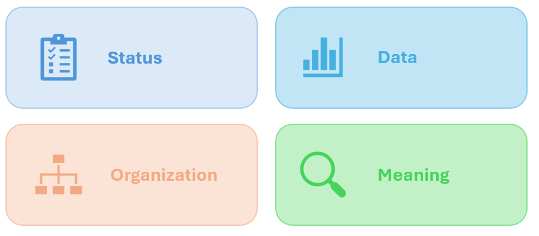

Emojis in README Files
README files are often the first point of contact for users exploring software. They provide important information such as installation steps, usage instructions, and project goals. Emojis are typically used in README files to improve readability and make sections easier to identify. When used correctly, they help organize content without distracting from technical details.

How to Use Emojis on Windows
Common Emojis Used in README Files
- 📁 Used to represent project structure or directories
- 📊 Used to display results, analytics, or performance metrics
- 📄 Used for documentation or configuration files
- ✅ Used to indicate completed features or tasks
Including emojis in README files helps break up large sections of text and improve readability. They act as visual markers that draw attention to important information. This makes it easier for users to quickly navigate documentation and locate key sections. When used sparingly, emojis enhance structure without distracting from the content.
| Emoji | Category | Typical Meaning |
|---|---|---|
| 📂 | Structure | Folders or directory structure |
| 📄 | Documentation | Files such as README or configuration files |
| 📈 | Data | Metrics, charts, or analysis results |
| ✅ | Status | Completed tasks or verified features |
External Resources
Link 1:
Emojipedia
A comprehensive reference for emoji meanings, history, and usage.
Link 2:
Should You Use Emojis in Business Communication?
An article discussing when emojis are appropriate in professional settings.